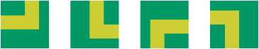
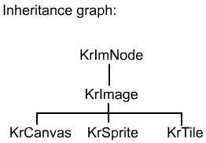
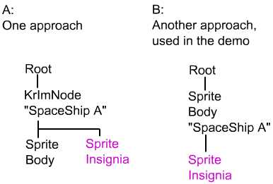
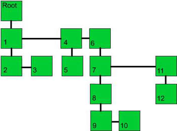
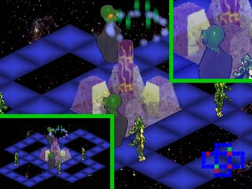

|
|
Kyra Engine
The engine exists for putting Sprites, Tiles, and Canvases on the screen. So first the explanation will start with these three important types. From there, the discussion will work back to the engine and ways to use it.
Sprite
A sprites is an object that is drawn on the screen. It can be any size, shape, foreground, or background. The term "Sprite" is traditionally used to refer to foreground objects; Kyra does not distinguish between foreground and background. In the Bug Eyed Monster Demo, each alien is a Sprite as well as the floor and the object in the center of the room.
Sprites are comprised of Actions.
Actions are made of Frames.
An alien drone is made of the following components:

So a sprite is composed potentially of many images. When using a sprite you can set its current state like this:
drone->SetAction( "WALK.DIR7" );
drone->SetFrame( 3 );
and, assuming the sprite has been added to the tree (more later) it will be drawn on the screen walking the direction '7' on frame 3. For sprites that have one action and one frame, like room objects, the actions and frames do not need to be set.
Sprites that uses sequence of multiple frames can take advantage of the DoStep() method. DoStep() automatically advances the frame and moves the sprite. When the Sprite is configured in the Sprite Editor, the alignment mode sets up the steps between frame. If a sprite has been "aligned" then DoStep() can be used. Calling DoStep() on the drone, above, would cause to move up and to the left, and its frame counter will be incremented by one.
Sprites can be transformed by color, visibility, alpha, position, or scale. For example, you can tint a sprite green and apply a 20 percent alpha. You can see this in the demo when the Big Brain is close to the strange object in the center of the screen.
Tile
let's say you had a game with a top-down perspective You might create an image of a road that bends. But you'd like to reuse it by rotating it, rather than creating multiple sprites.

That is as an example of a tile. In Kyra, it is a square image that can be rotated and flipped. Tiles can only have one frame. In version 2 and higher they can be scaled.
Tiles support the full range of color and alpha transformations. However they are much more efficient if used without an alpha channel and without a color or alpha transformation. This is normally not an issue, since they are almost always used for the background.
When choosing a Tile vs. a Sprite, always choose a Sprite unless you want to be able to rotate it.
Canvas
Kyra allows user drawn areas of the screen through Canvases. They are like miniature screens you can paint to, except that they support the full range of transformations, and will be correctly placed and transformed by the engine. (Drawing directly to the framebuffer that Kyra uses can be tricky to do without confusing the Kyra engine.)
KrImNodes and the Tree

The Sprite, Tile, and Canvas are all Images. This simply means that they can be drawn to the screen. KrImage is an abstract class and can not be instantiated.
The KrImNode (krim node) is the base class and an entirely different beast. It provides both basic functionality and is itself a useful container class.
The KrImNode has an x and y value that positions it on or off the screen. It also has a color, a name, a scaling factor, and an ID. A KrImNode lives in the Tree (which lives in the Engine), which is a container for a tree (in the algorithmic sense of an n-tree) of KrImNodes. The root of the Tree is the Root.
A KrImNode, and
all its children, can be transformed by:
Every KrImNode is transformed by its parents in the tree -- both spatially and by color. This is one of the odder but more useful features of Kyra. A child node moves with its parents, is color transformed by its parents, and scales with its parents. Some ideas about how the tree relationship is useful:
- Representing variable objects. A fighter plane has several insignia that might appear on its wings. A parent Sprite defines the plane, and then a Sprite can be created for the correct insignia, and added as a child. The insignia moves with the plane, and is positioned relative to it.
- Coloring objects. A fantasy warrior can be separated from its armor. If the warrior is the parent sprite, the armor can be added as a child sprite. The armor can then be color transformed to reflect its strength, magic, or type.
- Independent animations. A moon rover with a radar dish. You may want the wheels of the moon rover to move independently of the motion of the radar dish. You want the radar to draw over the rover body, which draws over the wheels. Each piece of the rover would be the child of a (non-drawing) KrImNode, and each frame can be set separately.
Consider a Tree that looks like this:

Case A
The root node has a KrImNode child with the name "SpaceShip A". The node itself does not get drawn, but it does have a position on the screen. So by setting the X and Y of the KrImNode, the Body and Insignia are moved with it. (Generally speaking, the body and insignia wouldn't have any offset from the KrImNode parent.) The Sprite child is given a color transformation.
If the KrImNode "Spaceship A" was given an alpha transform, it would transform the Body and Insignia as well.
If the Root is transformed, it effects every object. This is the way scrolling is achieved in the 2nd space demo.
Case B
Case B has exactly the same visual representation as A, but does not have the KrImNode container. This is in fact how the demo is set up. The way in which you want to be able to apply transforms determines the organization of the objects.
Note that child objects are drawn on top of their parents.
Depth
Both case A and B have the same depth sort. Background->Sprite Body->Sprite Insignia->Root. At the same level in the Tree, nodes are sorted left to right, with the sibling on the right being closer to the viewer. Although in practice it is easier to give siblings a numerical depth and the engine will sort them for you. Children are sorted ABOVE their parents.
A Tree, with depths, is shown below. Higher depths are closer to the viewer.

Scaling
Scaling is a transformation like position, color, and alpha. But there are some subtleties and special considerations that make this worth a special section. Scaling refers to the xScale and yScale components, which can be set separately. Note that scaling is specified using fixed point math (16.16), via the GlFixed class.
The Basics
Considering Tree "B" above, again, lets say "Spaceship A" is at screen location (10,10) and its insignia is located at (4,0) relative, of course, to "Spaceship A". In absolute coordinates, the insignia is located at (14, 10), the composition (addition, in this case) of the parent coordinates. If we apply a (0.5,0.5) scale to the spaceship, what happens?
"Spaceship A" is still located at (10,10). It is now drawn at half-size. The insignia is transformed by its parent, so it will also be drawn at half-size. Its offset is also transform by the parent, so in absolute coordinates it is now at (12,10). Visually, everything is kept properly positioned.
Real Time vs Cached
On the fly scaling -- real time scaling -- is relatively expensive to draw, and is of moderate quality. It works quite well for smaller areas of the screen, on things moving, or the zoom changing. However, you often want to be able to zoom in or out on the entire screen at very high quality. This is what cached scaling is used for.
Cached scaling pre-scales sprites (under the hood) at very high quality. This consumes memory, since you are essentially generating new sprites, but gives much higher quality results. The primary disadvantage, is that you need to choose a set a zooms to pre-cached ahead of time. If you want to see the world at a zoom of 0.5 and 2.0, this works very well.
Scaling has 3 quality settings: Fast (lowest quality), Linear, and Adaptive (highest and slowest.) An image will use the closest match to what it is set to. If quality is set to None, the Image will try to get a quality from a parent object.
The only practical limitation to be aware of is that Tiles do not scale in real time. The details of how objects scale:
| Real Time | Cached | |
| KrSprite (including text) | Fast quality | Yes |
| KrCanvas | Fast, Linear, Adaptive | N/A: doesn't cached, and will always render real-time. |
| KrTile | Yes. | Yes. |
| KrBox | Resizes independent of quality. | N/A |
Using Cached Scaling
Once you choose a zoom to cache, call the CacheScale() method on the appropriate resource. This will cache the scaled version. In the future, when the Image is drawn at the cached scale, the cached version will be used. That's it!
You can query a resource with IsScaleCached(), or if you want to removed the cached scales, FreeScaleCache(). The cached versions will be deleted when the resource in deleted, so normally you don't need to call the explicitly.
You can call CacheScale() or an entire ResourceVault, as well, to process a bunch at once.
Resources and the Vault
Every Image (Sprite, Tile, and Canvas) is an instance of a Resource. You will often have many instances of a given resource. Resources are created by the tools and stored in a .dat file. The .dat file is loaded and used to create resources which live in the Vault. The Vault can be queried for any type of resource by its name or id.
The CanvasResource is an exception. It is user created and placed in the Vault.
For example, SpriteResourece with the name "DRONE" is pulled out of the Vault in the BEM demo. All the Drone BEMs on the screen are instances of this one resource. Each instance of the Resource is a Sprite. The same relationship holds for Canvases and Tiles.
The Engine
So the Engine is mostly a container. It contains a Tree and a Vault for you to use. (It contains a bunch of other stuff as well, but that's for internal use.)
It does have the very important Draw() method, which you'll want to call once per frame. ;-)
View Windows
A view window is used in BEM demo 2:

A "view window" or "kyra window" is a subsection of the surface that Kyra is drawing to. Each window is a rendering of the same KrImageTree. However, each window can use different transformations and can appear quite different.
In the example above there are 5 windows.
- 1 window in the lower left. This uses a large scale on the Root() object to give a mini-map view.
- 1 window in the upper right. This changes the Root() scale, as well as the x and y position *for only this window.* This allows a moving camera that zooms in and out.
- 3 windows form bands for the main view. Windows can not overlap...so to create the main view takes 3 windows aligned to look like one.
All the windows are just different views of the same KrImageTree, which contains the Sprites and Tiles for the BEM demo.
When you create the engine, you can specify how many veiw windows you want to use, and their locations. They cannot overlap and you should not use more than you need, as there is some overhead for each window. You can have any number of windows up to KR_MAX_WINDOWS. If you need more, increase KR_MAX_WINDOWS and recompile the engine.
Each window is its own virtual screen, with coordinate (0,0) in the upper left. You can query the Engine for the position of any window, or for the real screen bounds.
When using the windows, it is important to remember that they are alternate views of the same Tree. They all contain essentially the same information, but have different transformations. When you set the scale, visibility, position, or any other transformation, it can be applied to all the windows or a particular one. For example,
SetVisibilty( false ) or SetVisibility( false, KR_ALL_WINDOWS) turns a node invisible in all windows, while
SetVisibility( false, 2 ) turns a node in the window index 2 to invisible. Note that window index 0 is the default window.
Using OpenGL [version 1.5]
To use OpenGL, simply pass an SDL_OPENGL surface to Kyra when the engine is created. Kyra will detect the OpenGL surface, and use the OpenGL library. It's very straightforward.
Run the demo, krdemo, with the -o option to see it in OpenGL. Note that you *must* have compiled in support for OpenGL; it is off by default in some configurations. See Build.
If you have a hardware accelerated OpenGL implementation, it is very, very, very fast. I mean really fast. Crazy fast. Scaling looks fantastic. On the other hand, if you have a software OpenGL implementation, it will be much slower than using a software surface. The SDL archives contain some discussion on how to detect one or the other. The "GameFactory" class has an example of getting the OpenGL provider. Look for the glGetString() call.
All Kyra functionality is supported in OpenGL mode, with one exception: KrBoxResources don't support multi colored boxes. Only the first color is used.
The case where you will see quality degradation is if you use Sprites that are larger than the max texture supported by your OpenGL implementation. Kyra will compensate and use smaller textures, but quality will suffer. You can limit how much video memory Kyra will use (at the cost of quality) in OpenGL mode by using the "SetMaxOglTextureSize" method.
It is worth noting that Kyra normally preprocesses all its image data. As soon as you load a resource, its processed and ready to go. This isn't quite true in OpenGL mode. Textures are sent to OpenGL "as needed." You can see a brief slow down if a bunch of new images are appearing on the screen all at once. It doesn't seem to be a practical issue in my testing.
Scaling is completely free in hardware OpenGL mode. Cached scaling is not meaningful, and will be ignored.
Collision Detection [version 1.6]
Kyra provides pixel perfect collision detection. Collision detection applies between Sprites and Canvases. (Tiles, Boxes, etc. are ignored.)
Note: Composite Objects -- TextBox and Widgets -- are built on Sprites. Their components *will* collide. Something to be aware of.
Kyra uses pixel perfect (or
near perfect, if scaled) 2D collision detection. 2D collision detection
is a necessary -- but not
sufficient -- collision criteria for 3D collision, if you are using an
isometric view. For top down or side views, this is a
complete detection scheme.
The basic method is KrImage::CheckCollision() which checks the collision between two KrImages. KrImageTree provides more versatile methods including CheckChildCollision, CheckSiblingCollision, and CheckAllCollision.
The ImageTree must be in an consistent state in order to for collision checking to work. The function Engine()->Tree()->Walk() will bring the tree into a ready state. The following operations will invalidate the state of the Tree, causing collision checking to fail:
- Setting any X, Y, or Scale property
- Adding anything to the
Tree. (Deleting from the tree is safe,
however.)
Walk can be a somewhat expensive call. Avoid calling it more than once per frame. A normal sequence of events would be something like:
- Move sprites, canvases, etc. Game & logic actions.
- Call Walk
- Check collisions. Call deletes
as you go, queue up additional
move and scaling actions. - Apply queued move and scaling actions.
- Draw()
Note that if you aren't using collision detection, you should never need to call Walk() directly. Also, if you check collisions *after* Draw(), but before any x/y/scale transformations, you don't need to call Walk().
When checking collisions, a window can be specified. Depending on the transformations applied, collisions can be different per window.
Collisions with scaled sprites and canvases is supported with one caveat: un-cached sprites can not be collision detected. For a full discussion of scaling, see scaling. In brief, a scaled image can be cached (pre-calculated at a give x and y scale) or real time scaled. Real time scaled sprites can not be used in a collision test.
Performance
Designing for Speed
Although Kyra has been extensively optimized, I have not fully measure performance across systems. I'll start with general guidelines here, and add information is it is collected. One very important testing tool is the demo itself. It can be run in speedtest mode (-s) at a specified depth (-d#) and windowed or fullscreen (-f). This is an excellent to collect information on a particular system and configuration.
Kyra is, at its heart, a 32-bit renderer. It likes to render to 32 bit surfaces. If the host supports a 32 bit screen mode, that is almost certainly your best bet.
It is also a dirty rectangle renderer. Kyra will minimize the amount of screen that needs to be re-drawn.
The table above below shows (my best guess) of the speeds of relative operations. It is a rule of thumb list, with the fastest operation at the top.
Fastest 32 bit target surface, no alpha or color transformation, no alpha in source sprite Canvas without an alpha channel. Tiles that are not rotated. Other targets, no alpha or color transformation, no alpha in source sprite. Cached scaling. Tiles that are rotated. Real time scaling, Alpha in source sprite OR color transformation OR alpha transformation Demanding Composite transformations
Performance is a combination of the complexity of the drawing operation, and the amount of screen being redrawn. A very complex operation limited to small areas of the screen is not very costly, in terms of total clock cycles. As the screen space drawn with complex operations increases, the more significant the performance impact, and the more concerned you will need to be with the nature of the draw operations versus the power of your target system.
Performance Checklist
"I need Kyra to be faster...."
- Try using a 32 bit SDL_Surface, even if this doesn't match the screen. SDL will convert to the proper format when the final blit is made to the video surface. (This usually -- though not always -- speeds things up.)
- Make sure you are linking to the Kyra release libraries. These are built by default in Linux (-o2 or -o2 on the command line), and are in the ./Release directory in Visual Studio. (In Windows, the tutorial app links to Debug, by the way.)
- If you don't need the background cleared (your graphics cover the entire screen) set FillBackground( null ). Clearing the background takes a reasonable amount of time, and it's wasted if you don't need it. If sometimes you need the background cleared, and sometimes you don't, it's probably worth putting in the logic to turn that on and off.
- Remove unneeded nodes from the Tree(). If you don't need it in there...it only eats clock cycles. (This is a small optimization: remove egregious extra nodes, but not things that you'll be using again.)
- Tiles should generally not have alpha channels. If you are extensively using transparency in a Tile, switch to using Sprites.
UI Widgets [version 2.0]
Kyra provides a set of simple, but extensible UI widgets. These include:
- Toggle and Push Buttons
- Console window
- List box
- Editable text widget
The widget system supports:
- Color and Font scheme
- Mouse selection and focus
- Keyboard selection and editing
- Accelerator keys ("hot keys")
The Widgets are fully integrated in to Kyra and are created much like you would create a Sprite or Canvas and put it in the Tree(). "guitest.cpp" in the 'guitest' subdirectory illustrates and documents an example of how the widgets are used. The methods for widgets are covered in the API docs. "guitest.cpp" is the best place to start.
Widgets are build around a publish/listener model. A widget publishes events (ACTIVATION, SELECTION, etc.) to whichever classes have registered themselves as listener by calling the HandleEvent method of the listening class. This decouples the widgets from the code that processes UI events. You can have one master class handle events from all widgets, or split it up to any degree you see fit.
Widgets generally are designed to be easy. You can create and transform them like all Kyra objects. You only need to remember to send mouse and keyboard events to the KrEventManager class in order to get them to work.